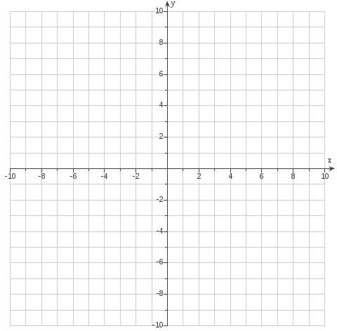

Graphing Quadratic Equations
What Does a Quadratic Graph Look Like?
Graphs of functions of the form \(f(x)=ax^2+bx+c\) take on the shape of a parabola.
Strategy for Graphing
Steps
- Find the vertex of the graph. The \(x\)-value is given by \[ x=\frac{-b}{2a}. \]
- Find the \(y\)-value of the vertex by plugging this value back into the original function.
- Use a T-chart to generate one or two additional points on one side of the vertex.
- Plot the vertex and your additional point(s), then reflect the points across the axis of symmetry to complete the graph.
Key Idea
Every parabola is symmetric about a vertical line called the axis of symmetry. This is why we only need to find points on one side and reflect them.
Example
For the following function, find:
- How the graph opens
- The vertex
- Any \(x\)-intercepts or \(y\)-intercepts
- The graph of the function
\[ f(x)=x^2-4x-5 \]

Example
For the following function, find:
- How the graph opens
- The vertex
- Any \(x\)-intercepts or \(y\)-intercepts
- The graph of the function
\[ f(x)=-x^2+4x+3 \]